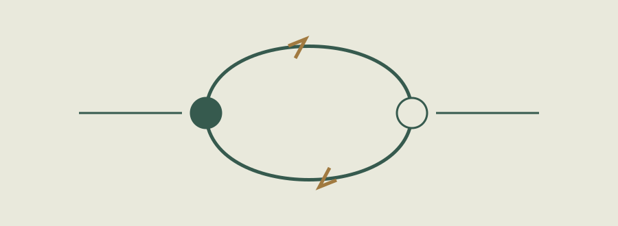
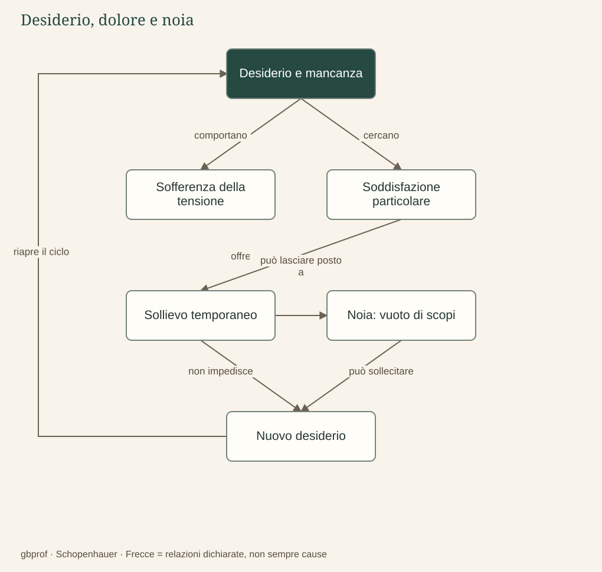

A · Comprendere Schopenhauer · 06
Desiderio, dolore e noia
Perché ottenere ciò che desideriamo non basta a renderci felici?
Desiderare qualcosa significa avvertire una distanza fra la condizione presente e quella verso cui tendiamo. Chi ha sete cerca l’acqua; chi si sente escluso cerca riconoscimento; chi attende un successo immagina che, una volta raggiunto, la propria inquietudine finirà. Schopenhauer considera questa struttura del desiderio una via per comprendere la sofferenza: finché vogliamo ciò che manca, il presente viene vissuto come insufficiente. Non ogni desiderio produce un dolore intenso, ma ogni volere manifesta una tensione che non coincide con la quiete.
La soddisfazione non chiude il volere
Quando otteniamo ciò che cercavamo, il bisogno particolare può essere realmente soddisfatto. Bere estingue la sete e una promozione conclude un’attesa; il filosofo non nega che esistano piaceri. Sostiene però che la soddisfazione non elimina la struttura del volere: il corpo tornerà ad avere bisogno, altri obiettivi prenderanno il posto del precedente, e ciò che sembrava decisivo diventerà gradualmente una condizione abituale. Il sollievo riguarda un desiderio, non il desiderare in quanto tale.
In questo senso Schopenhauer attribuisce alla soddisfazione un carattere prevalentemente negativo: essa toglie una mancanza o una pressione. «Negativo» non significa moralmente cattivo, ma legato alla cessazione di qualcosa che ci disturbava. Il dolore, invece, si impone direttamente all’attenzione. Possiamo dimenticare facilmente che un organo funziona bene, mentre un piccolo male può occupare l’intero campo della coscienza.
Perché compare la noia
Se i bisogni urgenti sono temporaneamente soddisfatti e non troviamo un nuovo oggetto capace di occuparci, può affacciarsi la noia. Essa non è la stessa cosa del riposo: riposare può essere piacevole, mentre annoiarsi significa avvertire il peso di un’esistenza che continua a tendere senza sapere verso che cosa. Ci sentiamo spinti a cercare un interesse, una novità, un’occupazione, perché il semplice possesso di ciò che desideravamo non basta a darci una pienezza stabile.
Il celebre movimento fra dolore e noia non va quindi preso come un calendario rigido: nessuno è obbligato a provare noia immediatamente dopo ogni soddisfazione. È una descrizione strutturale dell’instabilità del volere. Un nuovo desiderio può sorgere prima che il precedente sia appagato, diversi bisogni possono sovrapporsi, e l’attività può avere un valore che la formula scolastica non esaurisce.
Un esempio utile è l’attesa di un oggetto a lungo desiderato. Prima dell’acquisto attribuiamo a quell’oggetto il potere di trasformare la nostra vita; dopo qualche tempo lo incorporiamo nella normalità e cominciamo a guardare altrove. L’esempio chiarisce la tesi, ma non la dimostra universalmente. Studiare filosofia significa anche domandarsi se ogni piacere sia riducibile al sollievo e se attività come comprendere, creare o prendersi cura degli altri possano mettere in difficoltà questa descrizione.

Dopo la lettura
Mappa di sintesi


Leggi la mappa in forma testuale
- Desiderio e mancanza comportano Sofferenza della tensione.
- Desiderio e mancanza cercano Soddisfazione particolare.
- Soddisfazione particolare offre Sollievo temporaneo.
- Sollievo temporaneo può lasciare posto a Noia: vuoto di scopi.
- Sollievo temporaneo non impedisce Nuovo desiderio.
- Noia: vuoto di scopi può sollecitare Nuovo desiderio.
- Nuovo desiderio riapre il ciclo Desiderio e mancanza.
Fermati sul problema
Che cosa indica la noia nel ragionamento del filosofo?
Confronta il tuo ragionamento
Il peso di un tendere temporaneamente privo di un oggetto che lo occupi. La noia mantiene l’inquietudine del volere: non è né riposo soddisfacente né liberazione ascetica.